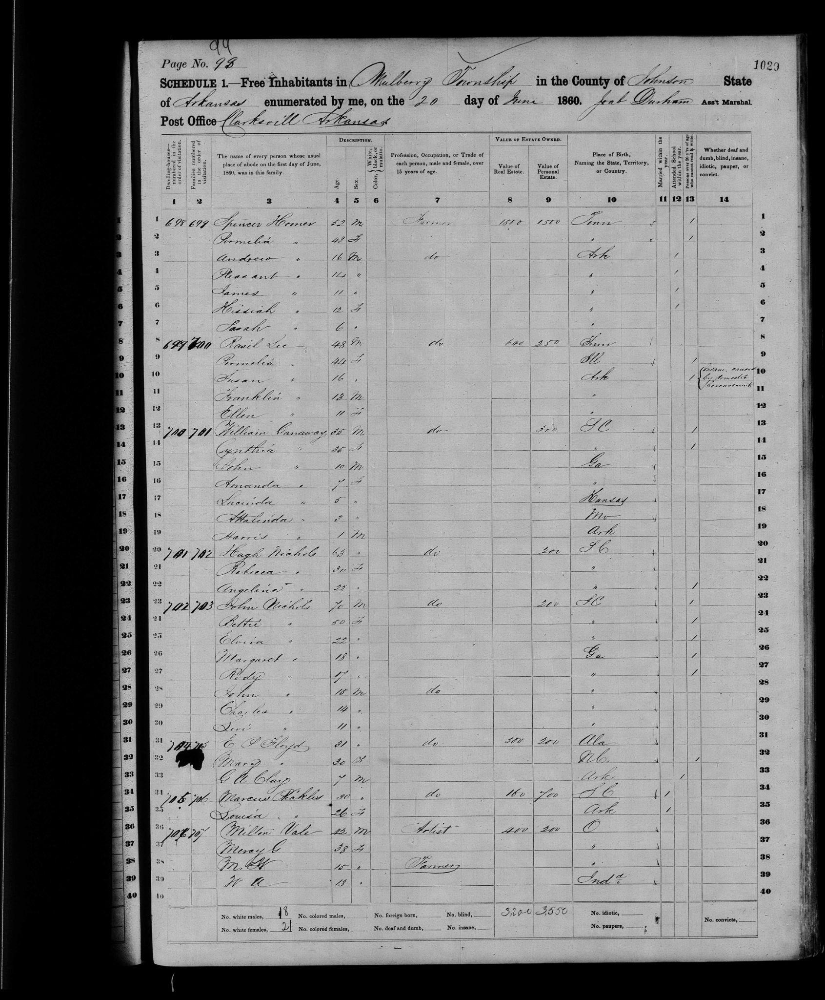
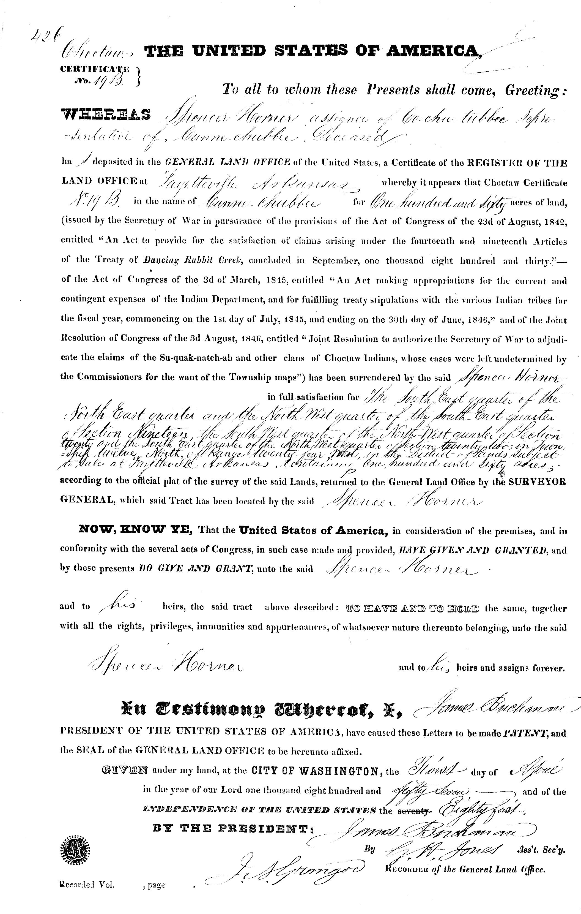

The Horner family in Civil War Johnson County
Current reading edition | v21.0 | 17 October 2026
The Horner Civil War Archive is a descendant-led public history project by Daniel Bret Lingar. It investigates reported killings in the Horner family, their remembrance, and the records needed to reconstruct wartime civilian life in Johnson County, Arkansas. The project brings family testimony into conversation with government records and memorials, while keeping their different purposes visible.
This edition replaces the earlier public reading edition. It corrects image identifications and factual overstatements; it does not declare every research question solved. Correction register · Research register · Printable dossier · Classroom pack · Grant packet.
How to read the evidence
An image can establish what a record says without proving every inference made from it. A census reports a household at an enumeration date; a patent conveys specified land; a memorial records how a death was commemorated. Later family accounts preserve experience and memory, but their claims need attribution and comparison. A military or pension summary is a research lead until its complete original and citation can be checked.
The numbered sources below give a source type, provenance, what the record can support, and its limits. Statements about an unlocated record mean only that the archive has not established its contents or located it in this review. They do not establish that no record ever existed or that officials refused to act.
The attack and later remembrance
The family narrative attributed to Eva Horner in 1942 describes Spencer Horner being shot after surrendering and William Riley Horner receiving a head wound. It is a later account, published here through excerpts rather than an authenticated complete manuscript [S04]. The archive’s chronology places an attack on 2 August 1864. The specific original evidence fixing that date remains a research task; William’s marker instead records his death on 10 August 1864 [S03]. These are distinct dates and claims.
Accounts of William’s injuries differ. Graphic descriptions of beating from earlier reconstructions are not repeated as established fact. Each version needs its own source and transmission history. The marker’s statement that those responsible were known to the family records a memorial accusation; it does not identify them by name or establish what legal action followed [S03]. The archive has not established the investigation or prosecution history.
Children, family losses, and identities
Family accounts connect the attack with the childhood experiences of John Samuel Acord and Christopher Columbus Acord. Christopher’s reported birth year varies between about 1859 and 1861; his exact age should remain unresolved until the underlying records are compared [S04, S07]. The earlier archive assembled seven reported family deaths between March and August 1864, including deaths from disease and killings. Their occurrence in one family does not establish a coordinated campaign. From 1 March to 12 August 1864 is 164 elapsed days; use the dates rather than the earlier incorrect count of 163.
Mary Ann Boen Horner, identified in the archive as William Riley’s widow, must be distinguished from Mary Ann Horner Boen, identified as Spencer’s daughter. Their names cannot be merged into a single person. Parentage and marriages require separate citations. On the pedigree previously displayed, Spencer → Elizabeth → John Samuel → Rosie → Argie → Patricia → Daniel has six parent-child links: a fourth great-grandparent relationship, conditional on proving each link. John Samuel’s second great-grandparent distance on that chain is consistent.
Land and the corrected census
The previous census display did not show the household it claimed to show. A different image has now been recovered from page 1 of the owner-supplied “1860 census” export. Its heading reads Mulberry Township, Johnson County, Arkansas; Clarksville post office; 20 June 1860. Dwelling 698, family 699, lines 1–7 begin with Spencer Horner, 52, farmer, Tennessee, with reported real estate of $1,500 and personal estate of $1,500. Permelia appears on line 2 [S01].

The page itself is available for checking. Cautious transcription. Difficult given names and ages remain provisional; the original series/roll and differing page numbers need reconciliation. The former Floyd pages 981–982 label, identification of a John T./Susan household as Spencer/Permelia, and associated $900/$200 comparison are withdrawn. William Riley’s own household has not been authenticated from the recovered set.
Patent 19B, dated 1 April 1857, names Spencer as assignee of Co-cha-tubbee, representative of Canne Chubbee, deceased. It covers 160 acres: SE 1/4 NE 1/4 and NW 1/4 SE 1/4 of section 19; NW 1/4 NW 1/4 and SE 1/4 NW 1/4 of section 22; T12N R24W [S02]. The first tract was previously reversed. This correction requires remapping before parcel conclusions are used.

Neither the patent nor the census establishes Indigenous ancestry, the transfer consideration, hidden money, or an attacker’s motive. Census dollars cannot establish how much acreage was omitted. The story that Permelia transferred a farm for a horse and wagon remains family tradition pending a deed or probate instrument [S04, S07].
Landscape, cemetery images, and access
The six files previously captioned as Moore Cemetery field photographs are census pages. Their gallery has been withdrawn and its automatic builder disabled. The existing William Riley marker image is a separate source [S03]; its photographer, capture date, and reproduction rights are unresolved. No June 2026 field visit or verified photographic survey is inferred from those files.
Historical survey notes describe fields, roads, streams and contrasting terrain [S06]. Corrected readings include 15.00 chains entering Arrington’s field, 20.20 leaving it, and 20.25 at the river; another name reads Eubanks. A nearby heading is dated 29 December 1843; the continued entry’s exact date remains under review. “G. Homers field” cannot by itself identify Spencer.
The homestead, cemetery and gate mapping is reopened. The repository contains conflicting Moore and Yale coordinates and unresolved differences between the reported coordinates and preferred modern parcel assignments. A GIS boundary candidate is not a field-confirmed gate. No present landowner, route, exact event site, or permission to enter is certified by this edition. Candidate map and reconciliation notice. Access requires permission established separately with the actual owner or managing agency.
Officials, service, and allegations
The earlier identification of John Fry Hill as sheriff on the attack date has already been challenged within the archive. The officeholder on 2 August remains unresolved. A roster naming Hill in 1858 and Cravens in 1864 does not settle the transition date. Regimental station information on 3 August and detached-service summaries do not establish Hill’s personal whereabouts on 2 August. Appointment records, full service cards and the referenced Case 4225 are needed [S07].
The archive reports Hiram Boen absent without leave during the period. AWOL status does not place him continuously in Johnson or Newton County, nor prove participation in an attack. His relationship to the Horners needs reconciliation against marriage records. Unlocated order Bo-276-66 may explain a reported charge removal, refer to other correspondence, or simply record an action; its contents cannot be stated in advance [S07].
The Henry Stewart image is a pension payment ledger, with columns for 1910–1915 on page 283 [S05]. It is not proof of a particular military unit, birth in 1840, death in 1930, or identity with a Yale grave. Shared surname and lodge references do not establish kinship between Thomas and Henry Stewart or a wartime network.
Reprisals and family tradition
The 1942-attributed account says a group associated with Dr. John Turner Horner killed seventeen of twenty attackers in reprisals. That count, the participants’ identities, timing, and circumstances are not independently established here [S04]. The published excerpt describes Jess Wilson as an associate who held the horses. Identification with Confederate prisoner James Mitchell Wilson, or another Wilson episode, needs a name-and-record bridge. These people are not presented as proved perpetrators.
Family accounts describe John Turner’s recruitment activity. Formal Union enlistment remains unresolved and must be separated from militia service or recruitment. The archive reports rejected pension application 1,143,763, with a filing date given as 2 March 1894; the original index/file must settle both chronology and rejection basis. This is OQ-15. WC75885 belongs to William Riley’s widow’s pension research, not John Turner’s rejected application. The Sturges account quoted in a summary has no verified creation date or demonstrated independence from other family traditions; it is later family testimony, not established contemporary corroboration [S07].
What the project can offer now
This release offers a corrected reading edition, a claim-reconciliation register, a catalog of seven source groups, a printable lesson with source sheets and a teacher key, a costed planning scenario, and a program-specific institutional planning draft. These are prepared materials, not evidence of a grant award, committed partners, tested classroom outcomes, or permission to reproduce every image.
The proposed public project asks how a rural family’s experience of wartime violence can be reconstructed when government documents, memorials and later memories answer different questions. It makes uncertainty visible as part of historical interpretation. It does not claim to be the first reconstruction or a proved account of an unprosecuted double murder.
Sources and further research
The annotated source catalog provides S01–S07 and proposed contextual scholarship. The research register specifies what remains to be acquired, transcribed, verified and published. The previous long-form narrative is retained as an explicitly superseded edition; its older claims are not certified by this release. The original 57-page PDF remains available in Git history.
Rights and corrections
Record custody, permission to reproduce a photograph, and ownership of the underlying historical facts are separate matters. Government record images are identified individually; third-party photographs and family text do not receive a blanket reuse license. Contact the project through its GitHub repository with a source, correction, or permission inquiry. No living person’s unpublished contact details are reproduced in this packet.